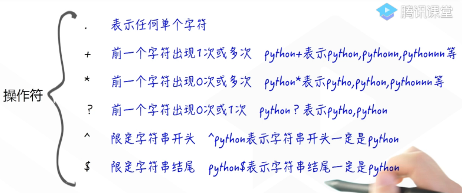
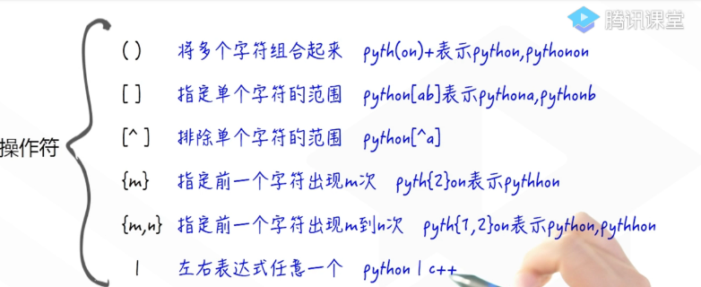

1.正则表达式中的操作符：


2.re库的使用：
import re
#search方法要求只要待匹配的字符串中包含正则表达式中的字符串就可以
match = re.search('python+','1988 pythonnnn 2019')
print(match.group())
#match()方法要求待匹配的字符串开头必须要和正则表达式中的字符串一样
match = re.match('python+','pythonnnnn 2018')
print(match.group())